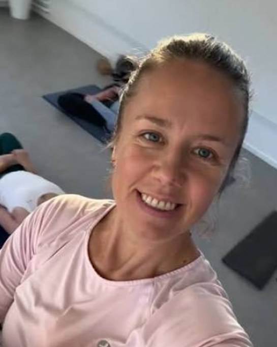

Thames Wellness Academy
Women-owned wellness education academy delivering Yoga Professionals Organisation Limited-certified programmes across Berkshire and Reading. The November 2026 teacher-training articles are credited to Katia Major and Raili Maripuu. Earlier Journal pieces use this Academy byline.
Journal articles
- Learn to teach yoga, become a certified yoga instructor Health-Medical-Fitness.com
- What are the entry requirements for 200h teacher training

Raili Maripuu - How to become a yoga teacher Katia Major
- Breath work in professional teaching practice
- Evidence-informed wellness education
 SEO for Wellness
SEO for Wellness - Workshop highlights and practitioner tips SEO for Wellness